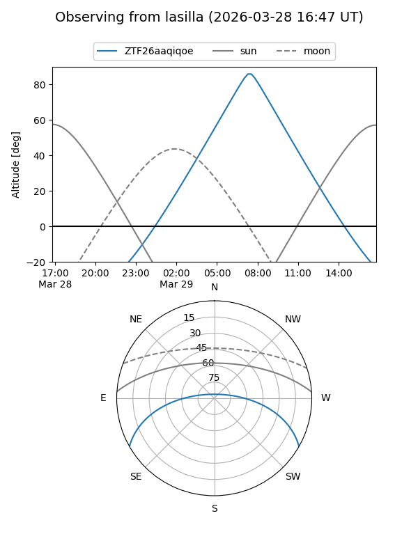
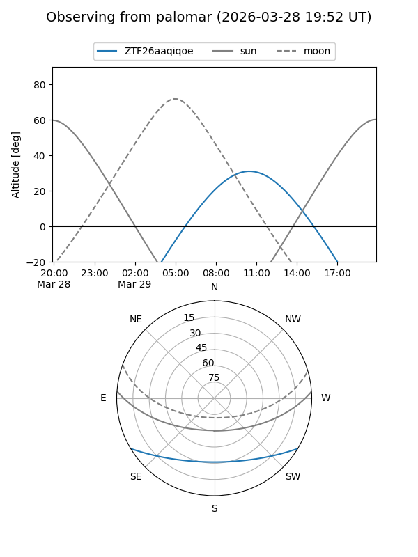

ZTF26aaqiqoe
Target ZTF26aaqiqoe at 2026-03-29 13:18
Aliases and brokers:
FINK: link
Lasair: link
ALeRCE: link
alt names
ZTF26aaqiqoe (ztf,fink_ztf)
Coordinates:
equatorial (ra, dec) = 226.8638,-25.45381
equatorial (HMS+DMS) = 15:07:27.30,-25:27:13.73
galactic (l, b) = (337.8333,+28.04765)
Flags:
Photometry:
last ztfg=17.22, ztfr=16.62
1 ztfg, 1 ztfr detections
Lightcurve
Visibility


Additional plots